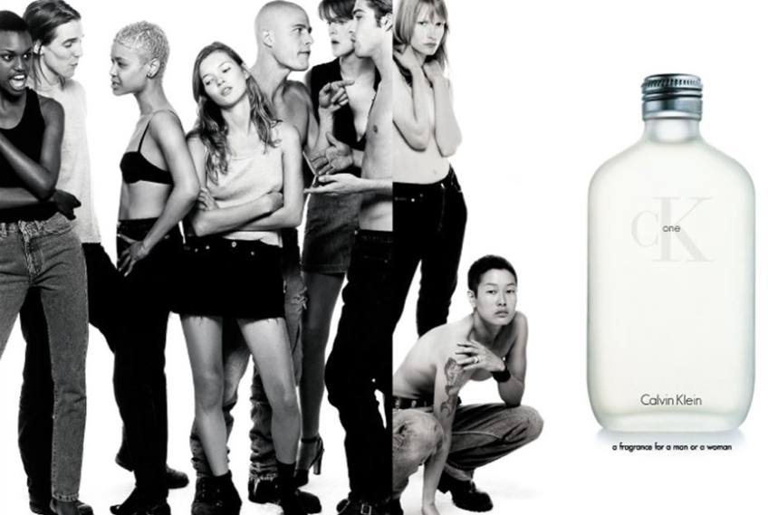

Question 3
How old is CK ONE turning in 2021?
25
CK One is a citrus aromatic chypre fragrance developed by Alberto Morilla and Harry Fremont for Calvin Klein It was launched in 1994 and became a best-seller.
